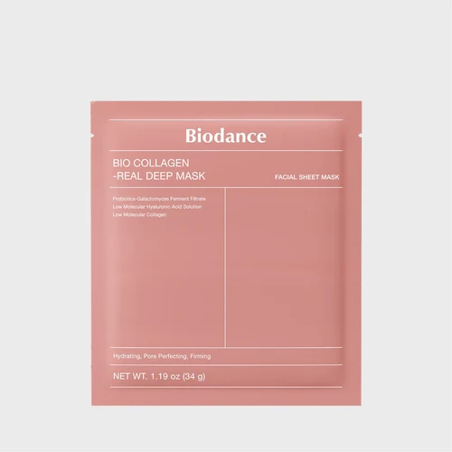

BIODANCE Bio-Collagen Real Deep Mask, Tightening and Hydrating
Check price on AmazonPrices change, check the live price on Amazon before buying.
A Korean hydrogel sheet mask worn for several hours or overnight. It starts out cloudy and turns almost clear as the skin absorbs the essence, leaving skin plump, soft and glowing by morning. Made for dry, dull and tired-looking skin, and for the night before an event.
Who it is for: Dry, dull or tired-looking skin, and anyone prepping the night before an event who wants an overnight hydration step. The formula is also made for sensitive skin.
Who should skip it: Skip it if you want a quick 10-minute mask or a reusable mask. This one is single-use, worn for several hours or overnight, 1 to 3 times a week as the last step after serum.
Key features
- Ultra-low molecular hydrolysed collagen helps firm skin and tighten the look of enlarged pores.
- Oligo-hyaluronic acid and sodium hyaluronate for deep and surface hydration.
- Three types of probiotics and ceramides support the skin barrier.
- Hypoallergenic formula, free from 19 harsh substances, suitable for sensitive skin.
- Single-use 34g mask, used 1 to 3 times a week as the last step after serum.
FAQs
How long do I wear the mask?
Several hours or overnight. It starts cloudy and turns almost clear as your skin absorbs the essence. Use it as the last step after serum, 1 to 3 times a week.
Is it suitable for sensitive skin?
Yes. The formula is hypoallergenic and free from 19 harsh substances, and it is made for sensitive skin.
What does it do for pores and firmness?
Ultra-low molecular hydrolysed collagen helps firm the skin and tighten the look of enlarged pores, while hyaluronic acid hydrates deeply.